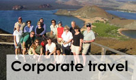

Ecuador Tours - Find your program
Chacay's mission and purpose is to create, in addition to a personalized experience, a close relationship between our clients and the local people in the communities you visit. We do this through partnerships with local foundations at each and every community destination. In this section, you will find information about Ecuador that will help you craft your trip according to your preferences, interests, and time available: ENJOY!
Superlative Ecuador
Ecuador stands head and shoulders above other countries in its biodiversity
per square meter. Here are some of its most distinctive characteristics:
The peak of Chimborazo, at 20,571 feet, is the planet's closest point of distance, because of the equatorial bulge, to the sun.
Ecuador is home to several UNESCO heritage sites, in particular:
Quito, Luz de America, is a beautifully preserved colonial masterpiece nestled in the Andes, and was the first site in the world to receive its designation in 1978
-
Cuenca, Ecuador's third largest city, was designated a cultural heritage site in 1993. Cuenca's architecture, much of which dates from the 18th century, was 'modernized' in the economic prosperity of the 19th century as the city became a major exporter of quinine, straw hats, pottery, and other products. It is also a world class destination for retiring baby boomers.
-
Galapagos: The Enchanted Islands, a UNESCO Natural Heritage Site and the global Mecca for conservation tourism, lie 570 miles off the coast of Ecuador. The archipelago consists of thirteen major and six smaller islands, with 42 islets, all of them of volcanic origin. There are two seasons for planning your visit: the cool or dry season stretches from May to December, and is also referred to as the garua, so named after the clouds that hover over the islands. It is warmer from January to early May. Chacay offers personalized luxury cruises of three, four, or seven days, with the following spectacular attractions: visits with Lonesome George, the world's most famous Galapagos turtle; aquatic encounters with sea lions, penguins, manta rays, and a variety of sharks; nesting sites of blue footed and masked boobies, frigate birds, flamingos and albatross; and both marine and land iguanas. Discover for yourself what captivated Charles Darwin almost two centuries ago!
-
Sangay National Park teems with flora and fauna and some of the most challenging mountains to be scaled in the Andes.
La Mitad del Mundo, or the Middle of the World, discovered by French explorer La Condamine (read The Mapmaker's Wife, an exciting account of travels in Ecuador by La Condamine's wife)
-
The Avenue of the Volcanoes that includes, in addition to Chimborazo, Cotopaxi, the world's tallest active volcano; and additional giants like Cayambe, Antisana, Tunguragua and El Altar, among others.
Ecuador is one of the world's top producers of quality roses, cacao, guayusa, coffee, bananas, shrimp and African palm oil, primarily for export. Chacay invites you to discover this fascinating aspect of the country, one of the most fruitful in the southern hemisphere!
-
Cuzco and Machu Picchu have become one of Latin America's most renowned destinations. Cuzco, the Inca capital, is a cultural and architectural masterpiece, combining the extraordinary construction skills of Inca masters with the traditional colonial of the Conquistadores. CHACAY will introduce you to this most visited Latin American destination and will unfold the wonders of the Inca empire. Itineraries include the Sacred Valley, and following a breathtaking train ride on the Vistadome from Ollantaytambo to Aguas Negras, a climb to Machu Picchu. This breathtaking destination was the summer residence of Pachacuti, the first Inca emperor, and is one of the seven wonders of the modern world.
CHACAY TRAVEL invites you to join our most popular tour that includes:
The magic of the mighty Andes, with a visit to Quito, UNESCO's first Cultural Heritage Site of Humanity
An unforgettable cruise on the Enchanted Islands of Galapagos.
The city of Cuzco and the Inca ruins of Machu Picchu, one of the seven wonders of the modern world
Our highly personalized 10, 15 or 21 day tours are tailored to address your interests and surpass your expectations, and include:
All transfers to and from airports, cruise, hotels, etc.
Lodging at 4 or 5 star boutique hotels
Full board
Certified Guides for our Daily Tours
Luxury cruises
Constant personalized attention and assistance
National Park Entrance Fee
Taxes
Not included:
Air fare
Pocket money
Incidental expenses
Additional food and beverages beyond full board

Contact us
Mobile: 593 98 308 267 (Ecuador)
E-mail: sales@chacay.com
Phone: 1 888 776 6802 (USA)
Av. República del Salvador y Naciones Unidas
Edificio Mansión Blanca Local 14D
Quito, Ecuador